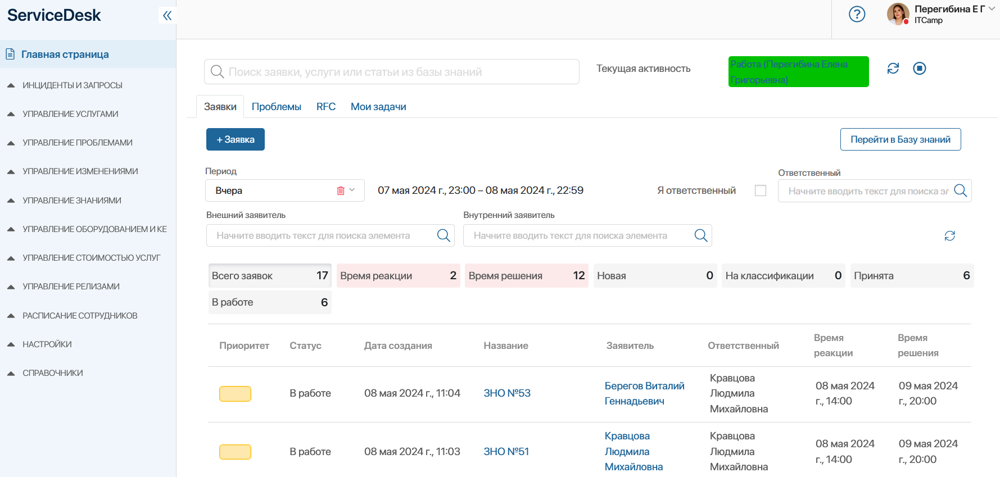
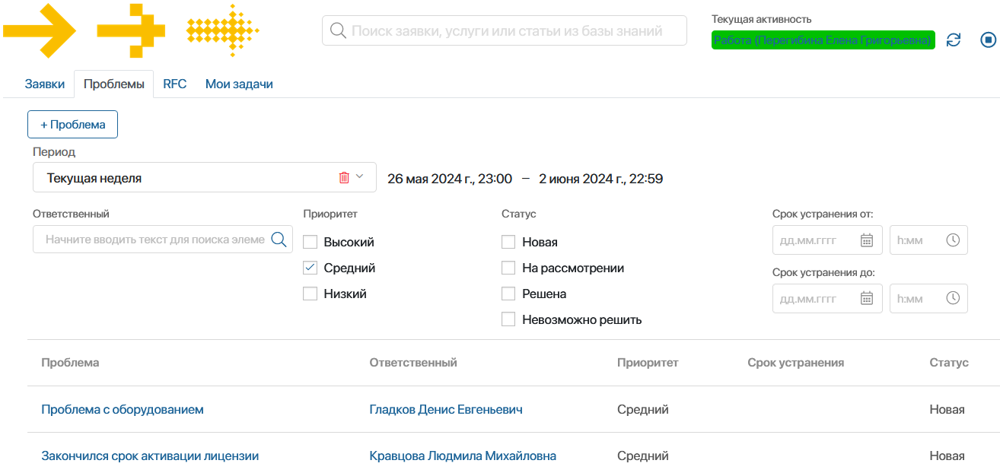
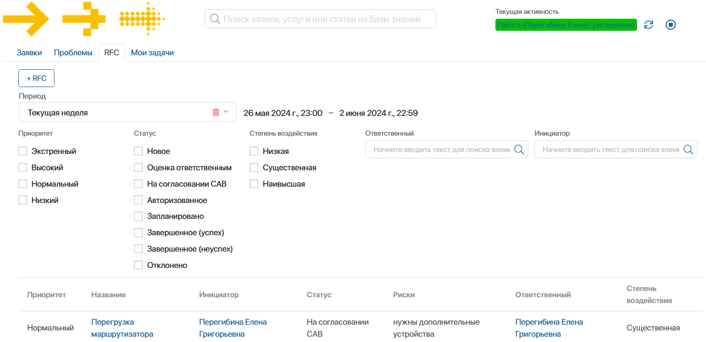

Решение ServiceDesk 2.0 предназначено для работы с клиентскими обращениями, которые регистрируются в системе. За обработку обращений отвечают операторы — сотрудники компании, включённые в группу Операторы.
Основное рабочее место оператора — Главная страница. Здесь удобно, не переходя в другие разделы, выполнять следующие действия:
- работать с клиентскими обращениями, а также создавать заявки, проблемы и запросы на изменение;
- просматривать и закрывать свои задачи;
- быстро найти нужную заявку, услугу, информацию из базы знаний, используя строку поиска вверху страницы;
- отмечать своё рабочее время, используя настройки текущей активности.
Главная страница состоит из вкладок: Заявки, Проблемы, Запросы на изменение и Мои Задачи.

Изменить текущую активность
Прежде чем начать работу, в правом верхнем углу страницы нажмите значок и выберите статус текущей активности, например, Работа. В течение дня вы можете менять статус, используя другие варианты, например, Обед или На совещании. По окончании смены завершите активность, нажав .
Просмотреть отмеченные изменения статусов за выбранный период можно в приложении Активность сотрудника.
Вкладка «Заявки»
На этой вкладке вы можете работать с обращениями клиентов:
- создать заявку, нажав кнопку + Заявка;
- обработать заявку. Для этого перейдите в карточку заявки, нажав на её название в списке;
- посмотреть общее число заявок и по каждому статусу за выбранный период, а также количество заявок с превышением нормативов SLA;
- перейти в базу знаний, где собраны полезные статьи и успешные решения.
По умолчанию вы увидите список своих заявок, которые зарегистрированы сегодня. Вы можете изменить параметры отображения списка:
- выберите период регистрации заявок: Последний час, Вчера, Текущая неделя, Прошлая неделя, Текущий месяц, Прошлый месяц. Можно задать нужный период вручную;
- снимите галочку Я ответственный, чтобы просмотреть заявки другого ответственного;
- укажите внешнего или внутреннего заявителя.
Вкладка «Проблемы»
В ходе работы операторы могут выявлять общие причины обращений и фиксировать их в системе в виде проблем.
На вкладке вы можете:
- создать новую запись, нажав кнопку + Проблема;
- обработать проблему. Для этого перейдите в её карточку проблемы, нажав на её название в списке.
Чтобы найти нужную проблему, выберите или задайте период её регистрации, укажите ответственного, приоритет, статус и срок устранения.

Вкладка «RFC»
Чтобы повысить уровень оказания услуг, оператор может создать запрос на изменение оборудования или ПО, которое влияет на оказание услуги.
На вкладке RFC вы можете:
- создать запрос на изменение, нажав кнопку + RFC;
- обработать зарегистрированный запрос. Для этого перейдите в его карточку, нажав на название в списке.
Чтобы найти нужный запрос, выберите или задайте период регистрации, отметьте приоритет, статус, степень воздействия, укажите ответственного и инициатора запроса.

Вкладка «Мои задачи»
Вкладка отображает данные из раздела Задачи. Вы можете работать с назначенными вам задачами, оставаясь на главной странице решения ServiceDesk 2.0.